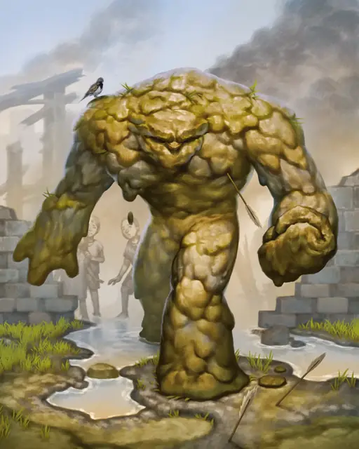

Глиняный голем
Clay Golem
Большой Конструкт, без мировоззрения

Класс Защиты 14 Инициатива +3 (13)
Хиты 123 (13к10 + 52)
Скорость 30 футов
| мод | спас | ||
|---|---|---|---|
| СИЛ | 20 | +5 | +5 |
| ЛОВ | 9 | −1 | −1 |
| ТЕЛ | 18 | +4 | +4 |
| мод | спас | ||
|---|---|---|---|
| ИНТ | 3 | −4 | −4 |
| МДР | 8 | −1 | −1 |
| ХАР | 1 | −5 | −5 |
Сопротивление урону Дробящий, Колющий, Рубящий
Иммунитеты Кислота, Психический, Яд; Испуганный, Истощение, Окаменевший, Отравленный, Очарованный, Парализованный
Чувства Тёмное зрение 60 футов, пассивное Восприятие 9
Языки Общий
Опасность 9 (5 000 опыта; БВ +4)
Особенности
Поглощение кислоты. Каждый раз, когда голем должен получить урон Кислотой, он не получает урон и вместо этого восстанавливает Хиты в количестве, равном наносимому урону Кислотой.
Берсерк. Каждый раз, когда голем начинает свой ход Окровавленным, бросьте 1к6. При результате 6 голем впадает в состояние берсерка. В каждый свой ход, пока голем в состоянии берсерка, он атакует ближайшее существо, которое видит. Если поблизости нет существа, к которому можно переместиться и атаковать, голем атакует объект. Голем остаётся в состоянии берсерка, пока его не уничтожат либо пока он Окровавлен.
Неизменяемая форма. Голем не может перевоплощаться и быть перевоплощён.
Сопротивление магии. Голем совершает с Преимуществом спасброски от заклинаний и прочих магических эффектов.
Действия
Мультиатака. Голем совершает две атаки Размашистым ударом или три атаки Размашистым ударом, если он использует Спешку в этом ходу.
Размашистый удар. Бросок рукопашной атаки: +9, досягаемость 5 фт. Попадание: 10 (1к10 + 5) Дробящего урона плюс 6 (1к12) урона Кислотой, и максимум Хитов цели снижается на значение, равное полученному урону Кислотой.
Бонусные действия
Спешка (Перезарядка 5–6). Голем совершает действие Рывок и Отход.
Бонус мастерства +4
Среда обитания Город
Сокровища Реликварные
Глиняный голем
Хранитель дома и очага
Глиняные големы — магические защитники, которых создают из земли и глины для охраны мест и поселений. Для их создания мастер использует такие материалы, как глина из святого источника или кирпичи из волшебных развалин, имеющие особое значение и взятые недалеко от территории, которую будет охранять страж. Среди глиняных големов встречаются как искусно сделанные копии живых существ, так и те, чей облик лишь отдалённо напоминает человеческий.
Големы подчиняются своим создателям и охраняют самые важные ценности. Даже если их хозяева давно погибли, они продолжат выполнять данные им приказы. Совершите бросок по таблице «Приказы глиняного голема» для вдохновения или выберите сами команду, которой следует глиняный голем.
Приказы глиняного голема
| 1к4 | Выполняя приказ, глиняный голем будет… |
| 1 | Преграждать путь любому вошедшему на территорию с обнажённым оружием. |
| 2 | Защищать всех членов семьи создателя или поселение от любой опасности. |
| 3 | Охранять мост от Исчадий. |
| 4 | Выдворять любого, кто осмелится войти в мастерскую его хозяина. |